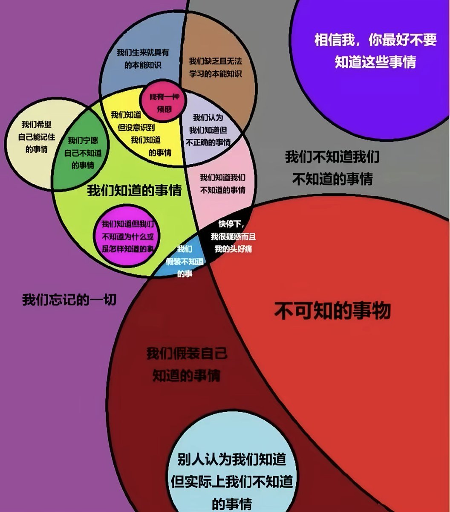

Rhinnschneevall
@RainduRhinns
1. 假设对知识的知识不是A和类A的关系 2. 我们可以不依赖经验的先验综合事物 3. 如果承认1.2.,那么不存在“不可知的事物”，只存在 事物的不可知性 4. 不考虑模态，并不是你先有一个无法用语言描述的东西然后尝试用语言去描述它，而是你如果无法用语言去描述，那就没有这个东西 5. 必须混淆真值和语义

由依🍥
@youy1qwq
这个图竟然真的有逻辑 https://t.co/7sL0adE8jT